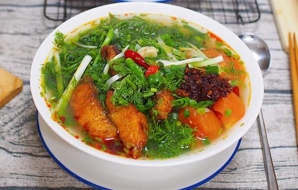
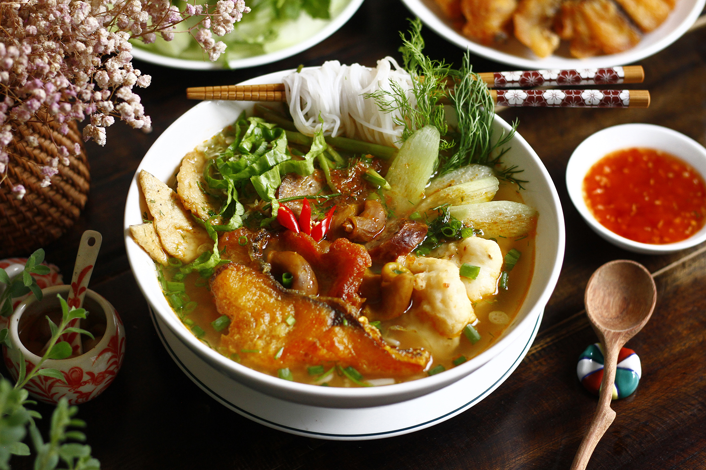
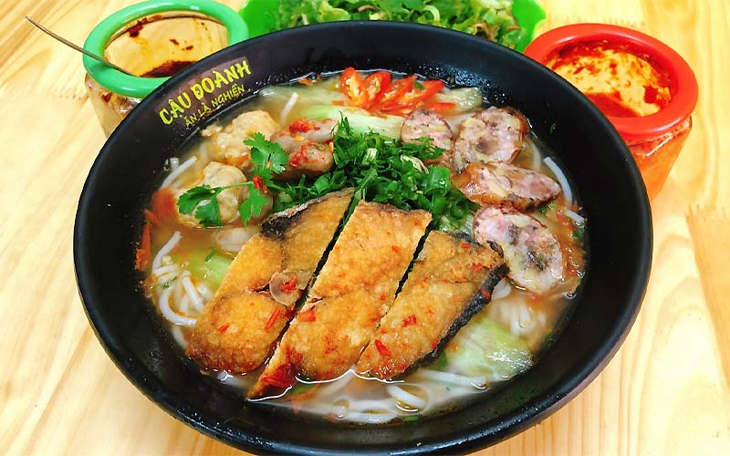

Bún Cá Cay Hải Phòng là một đặc sản nổi tiếng của thành phố cảng, gây ấn
tượng mạnh với thực khách bởi hương vị đậm đà, cay nồng đặc trưng, kết
hợp hoàn hảo giữa sợi bún tươi, chả cá giòn dai, cá chiên thơm lừng và
nước dùng chua cay mặn ngọt hài hòa. Món ăn này chắc chắn sẽ làm ấm lòng
và thỏa mãn vị giác của bạn.



Nguyên liệu
Cá: 500g cá diêu hồng, cá rô phi, hoặc cá basa (chọn
cá tươi ngon, ít xương)
Bún: 300g bún lá hoặc bún rối (sợi bún to và dai)
Chả cá: 100g chả cá chiên hoặc chả cá hấp (mua sẵn
hoặc tự làm)
Tôm tươi: 50g (tùy chọn, để tăng thêm độ ngọt cho
nước dùng và topping)
Xương cá: Phần xương cá đã lọc thịt (để hầm nước
dùng)
Rau củ quả:
Cà chua: 2 quả (chọn quả chín đỏ)
Hành tây: 1 củ nhỏ
Thì là: 1 bó nhỏ
Hành lá: 3-4 nhánh
Ớt tươi: 2-3 quả (tùy độ cay mong muốn)
Dọc mùng (bạc hà): 200g (tùy chọn, sơ chế kỹ để không bị ngứa)
Gia vị:
Nước mắm: 2-3 muỗng canh
Mắm tôm: 1/2 - 1 muỗng cà phê (tùy khẩu vị, tạo mùi đặc trưng)
Me chua: 1-2 quả (hoặc 1-2 muỗng canh nước cốt me/sấu/dứa)
Đường: 1-2 muỗng cà phê
Bột ngọt: 1/2 muỗng cà phê (tùy chọn)
Dầu ăn: Để chiên cá và phi thơm
Hành tím: 2-3 củ (băm nhỏ)
Tỏi: 1 củ (băm nhỏ)
Ớt bột hoặc sa tế: 1-2 muỗng cà phê (tạo màu và độ cay)
Rau sống ăn kèm: Rau xà lách, giá đỗ, rau thơm các
loại.
Cách làm
Bước 1: Sơ chế nguyên liệu chính
Cá:
Cá mua về làm sạch, đánh vảy, bỏ ruột, rửa sạch. Dùng dao sắc
lọc lấy phần thịt cá, thái thành miếng vừa ăn (khoảng 2-3 cm).
Phần xương cá và đầu cá giữ lại để hầm nước dùng.
Ướp thịt cá đã thái với 1/2 muỗng cà phê muối, 1/4 muỗng cà
phê tiêu, 1/2 muỗng cà phê hạt nêm (hoặc bột ngọt nếu dùng).
Trộn đều và để khoảng 15-20 phút cho cá thấm gia vị.
Chả cá: Thái chả cá thành miếng vừa ăn.
Tôm tươi (nếu dùng): Bóc vỏ, bỏ đầu, rút chỉ đen
ở lưng, rửa sạch.
Dọc mùng (tùy chọn): Tước bỏ vỏ xanh bên ngoài,
thái lát xéo. Xóc với muối hạt, bóp nhẹ cho ra bớt nước và nhựa,
rửa sạch lại nhiều lần với nước lạnh. Vắt ráo, sau đó chần nhanh
qua nước sôi có pha chút phèn chua hoặc giấm để dọc mùng giòn và
không bị ngứa. Vớt ra ngâm vào nước đá lạnh rồi để ráo.
Bước 2: Chuẩn bị rau củ và gia vị
Cà chua: Rửa sạch, bổ múi cau.
Hành tây: Bóc vỏ, thái múi cau hoặc thái lát
mỏng.
Hành lá, thì là: Rửa sạch, thái khúc khoảng 2-3
cm. Giữ lại một ít đầu hành trắng để phi thơm.
Ớt tươi: Thái lát hoặc băm nhỏ tùy độ cay mong
muốn.
Me chua (hoặc sấu/dứa): Nếu dùng me quả, cạo vỏ,
dầm với một ít nước nóng, lọc lấy nước cốt. Nếu dùng sấu, cạo vỏ,
khứa vài đường. Dứa gọt vỏ, cắt lát.
Hành tím, tỏi: Bóc vỏ, băm nhỏ.
Bước 3: Nấu nước dùng Bún Cá Cay
Hầm xương cá: Cho xương cá và đầu cá đã sơ chế
vào nồi, đổ khoảng 1.5 - 2 lít nước lọc. Đun sôi, hớt bọt thật kỹ
để nước dùng trong. Hạ lửa nhỏ, hầm khoảng 20-30 phút để lấy nước
ngọt.
Phi thơm và tạo màu: Trong một chảo khác, cho 2
muỗng canh dầu ăn vào đun nóng. Phi thơm hành tím và tỏi băm. Cho
cà chua bổ múi cau vào xào sơ cho cà chua mềm và ra màu. Thêm 1-2
muỗng cà phê ớt bột hoặc sa tế vào xào cùng để tạo màu đỏ cam đẹp
mắt và độ cay.
Hòa quyện nước dùng: Đổ hỗn hợp cà chua xào vào
nồi nước dùng xương cá. Thêm hành tây, me chua (hoặc sấu/dứa) vào
nồi.
Nêm nếm: Nêm nước mắm, mắm tôm (bắt đầu với 1/2
muỗng cà phê, nêm từ từ để tránh bị mặn gắt), đường, bột ngọt (nếu
dùng). Nêm nếm lại cho nước dùng có vị chua, cay, mặn, ngọt hài
hòa, đậm đà.
Bước 4: Chiên cá và chả cá
Làm nóng chảo với dầu ăn. Cho thịt cá đã ướp vào chiên vàng đều
các mặt. Chiên nhanh để cá không bị khô. Vớt ra để ráo dầu.
Nếu dùng chả cá sống, bạn có thể chiên hoặc hấp chín. Chả cá chiên
sẵn thì chỉ cần chiên sơ lại cho nóng và giòn.
Nếu dùng tôm, có thể xào nhanh tôm với chút tỏi cho chín tới.
Bước 5: Hoàn thiện tô Bún Cá Cay
Chần bún tươi qua nước sôi khoảng 30 giây - 1 phút cho bún nóng và
mềm, vớt ra để ráo.
Xếp bún vào tô. Lần lượt cho thịt cá chiên, chả cá, tôm (nếu
dùng), và dọc mùng (nếu có) lên trên bún.
Chan nước dùng nóng hổi vào tô bún.
Rắc hành lá, thì là thái khúc và ớt tươi thái lát lên trên để
trang trí và tăng hương vị.
Bước 6: Thưởng thức
Dùng Bún Cá Cay nóng. Có thể ăn kèm với các loại rau sống như rau
xà lách, giá đỗ, rau thơm.
Tùy theo sở thích, bạn có thể thêm chút tương ớt hoặc chanh vắt
vào tô bún để tăng thêm hương vị.
Mẹo nhỏ để Bún Cá Cay Hải Phòng ngon hơn:
Chọn cá tươi: Chọn cá tươi, mắt trong, vảy óng ánh
và thịt chắc để đảm bảo độ ngọt và không bị tanh.
Sơ chế cá kỹ: Làm sạch cá thật kỹ, đặc biệt là phần
máu đông và màng đen trong bụng cá để loại bỏ mùi tanh. Ngâm cá với
nước muối loãng hoặc gừng đập dập cũng giúp khử mùi hiệu quả.
Nước dùng đậm đà: Hầm xương cá kỹ và xào cà chua
với ớt bột/sa tế trước khi cho vào nước dùng sẽ giúp nước dùng có
màu đẹp và hương vị đậm đà, cay nồng đặc trưng.
Mắm tôm: Mắm tôm là yếu tố tạo nên mùi vị đặc trưng
của bún cá cay Hải Phòng. Tuy nhiên, nên cho một lượng vừa phải và
điều chỉnh theo khẩu vị để không bị quá nồng.
Dọc mùng: Sơ chế dọc mùng đúng cách (bóp muối, rửa
sạch, chần qua nước sôi có phèn chua/giấm) là rất quan trọng để dọc
mùng giòn và không gây ngứa.
Cá chiên: Chiên cá sơ qua giúp miếng cá săn chắc,
thơm hơn và không bị nát khi cho vào nước dùng.
Thưởng thức nóng: Bún cá cay ngon nhất khi dùng
nóng hổi, kết hợp với các loại rau sống tươi ngon.
Bình luận và Đánh giá
Đánh giá của bạn
Chưa có bình luận nào.